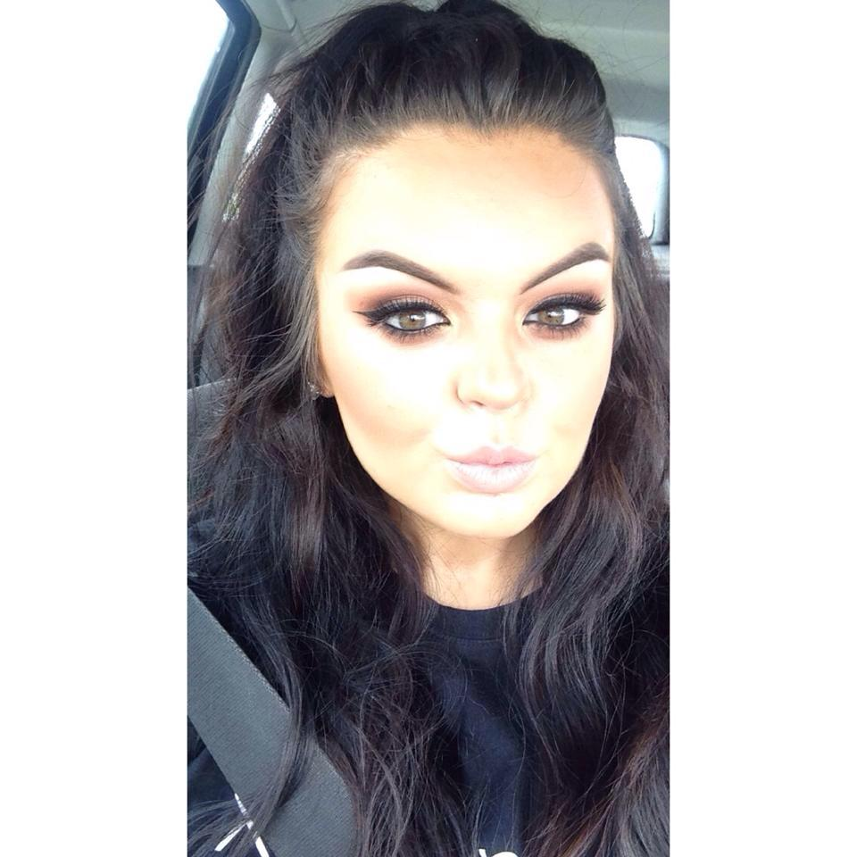

Aisling Power
Welcome to my Portfolio

ABOUT ME:
I am currently a 1st Year student studying Creative Digital Media in IT Blanchardsown, Dublin. I really enjoy the design aspect of the course and getting to be as creative as possible.Throughout this space you can see different videos, photos, illustrations and web development which I have created this year.

In The Future:
When I have finished CDM I would love to work for a makeup brand but working in the digital media side of things. I currently work on a makeup counter and would love to mix my passion for makeup with digital media.